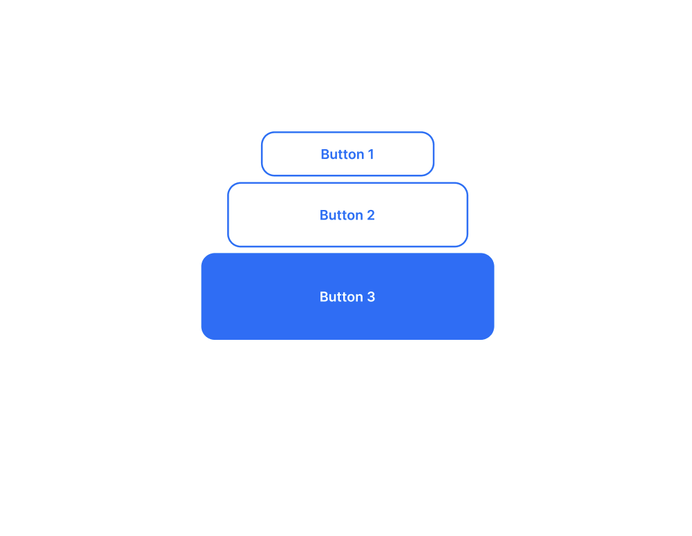

01
Цветовая палитра
Определяет основные и дополнительные цвета интерфейса.
Дизайн-системы
Визуальный порядок, который помогает продуктам расти.

Представьте цифровой продукт, над которым одновременно работают несколько дизайнеров и разработчиков. Каждый создаёт кнопки, формы, карточки и другие элементы интерфейса самостоятельно. Постепенно появляются различия в цветах, размерах, отступах и поведении элементов. Интерфейс становится неоднородным, а внесение изменений требует всё больше времени.
Именно эту проблему решают дизайн-системы. Они позволяют создать единый визуальный язык продукта, которым пользуется вся команда. Вместо постоянного создания элементов с нуля специалисты обращаются к общей библиотеке готовых решений.
В основе любой дизайн-системы лежит несколько взаимосвязанных уровней. Каждый из них отвечает за определённую часть работы над интерфейсом. В первую очередь создаются дизайн-токены — базовые значения, определяющие визуальные характеристики продукта. К ним относятся цвета, типографика, размеры, отступы, радиусы скругления и тени.
Следующий уровень — компоненты. Это готовые элементы интерфейса: кнопки, поля ввода, переключатели, карточки и другие повторяющиеся объекты. Наконец, паттерны и правила объединяют компоненты в более сложные решения.

Основные составляющие визуального языка, которые помогают всей команде работать согласованно.
Определяет основные и дополнительные цвета интерфейса.
Задаёт систему шрифтов, начертаний и размеров.
Формируют пространственную структуру и ритм интерфейса.
Представляют собой готовые элементы интерфейса для повторного использования.
«Создать элемент один раз, чтобы использовать его десятки и сотни раз, — значит освободить время для решения действительно важных задач».Принцип дизайн-системы
Компонентный подход меняет сам принцип работы над цифровым продуктом. Вместо того чтобы проектировать каждый элемент отдельно, дизайнер создаёт универсальное решение, которое можно адаптировать под разные задачи.
Это помогает быстрее обновлять интерфейс, сохранять единый стиль и не тратить время на повторную работу. Изменение одного базового компонента может обновить десятки его экземпляров.
Один базовый компонент может иметь несколько свойств и вариантов. Например, кнопка может отличаться размером, цветом, наличием иконки и состоянием взаимодействия.
Все варианты сохраняют общие правила оформления. Благодаря этому компонент легко использовать в разных частях продукта, не нарушая целостность интерфейса.

Создание дизайн-системы начинается с изучения продукта и потребностей команды. Чтобы система действительно помогала в работе, двигайтесь последовательно:
Распространённые ошибки мешают команде пользоваться библиотекой и развивать её.